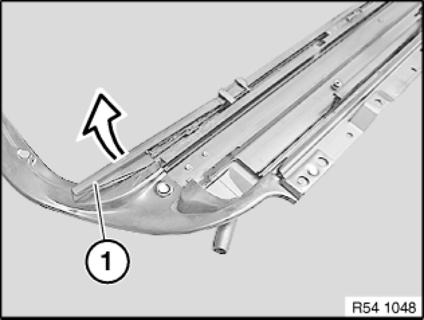
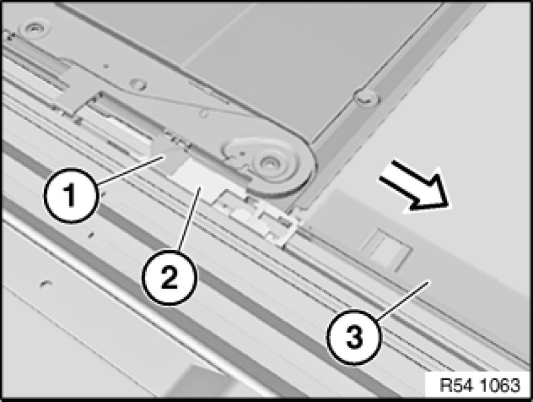
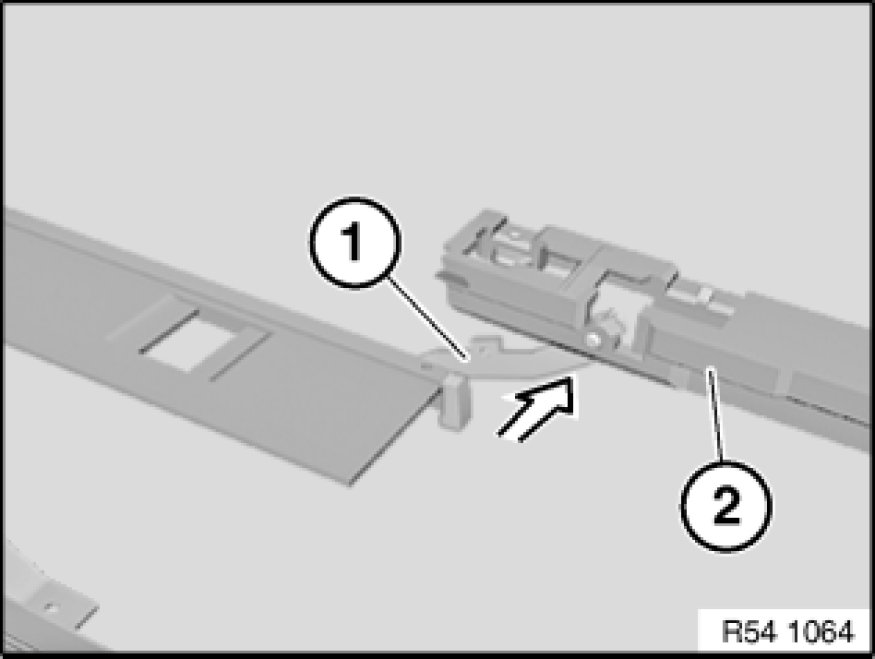
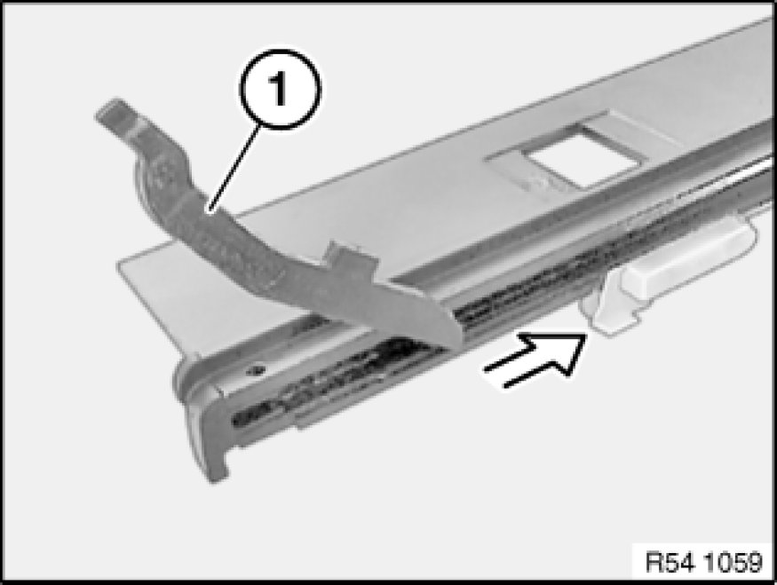

Sunroof / Moonroof Track: Service and Repair
54 10 070 - Removing and installing/replacing slider set for floating roofliner

Necessary preliminary tasks:
- Remove glass slide/tilt sunroof 54 12 211 Removing and Installing Complete Glass Slide/Tilt Sunroof
- Remove rear floating roofliner 54 13 070 Removing and Installing/Replacing Both Floating Roofliners For Glass Slide/Tilt Sunroof
- Remove fan grille 54 13 070 Removing and Installing/Replacing Both Floating Roofliners For Glass Slide/Tilt Sunroof
- Remove drive unit with gearing 67 61 517 Replacing Drive With Gear (Rear) for Actuating Slide/Tilt Sunroof

Important!
Risk of damage!
Carefully press down end stops (1) on left and right and unclip in inward direction from guide channel.
Installation:
Engage end stops at front and clip into place by applying pressure.
Check that end stop is correctly seated in relation to guide channel. If necessary, carefully bend end stop upwards.

Carefully unclip slide block (1) on left and right (risk of damage).
Pull driver for rear floating roofliner (2) and slider set (3) towards rear out of guide.

Disengage rocker arm (1) from driver for rear floating roofliner (2).

Remove rocker arm (1) from rail and replace if necessary.